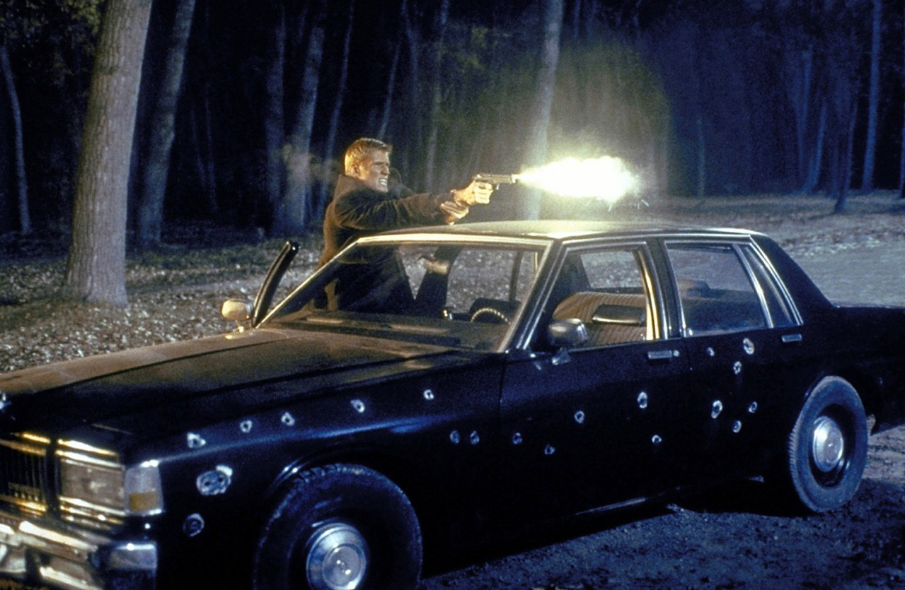
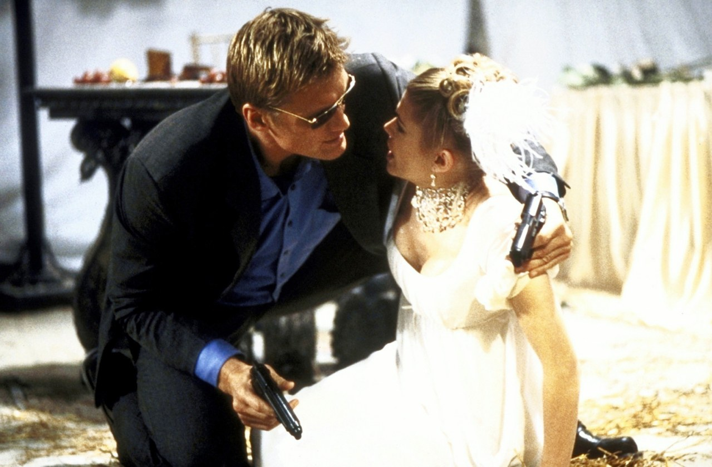
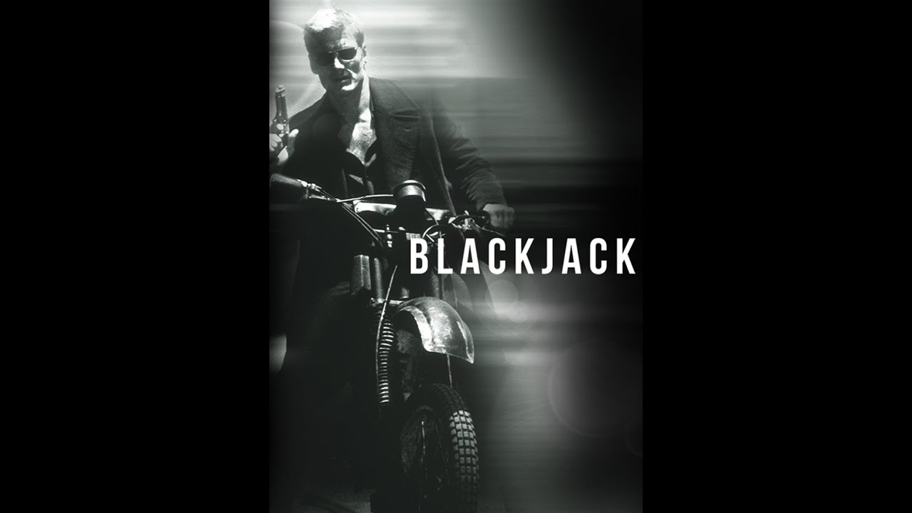

J'avais quinze ans.
C'était sur M6. Une bande annonce entre deux émissions — et le nom de John Woo en grande lettre sur l'écran.
John Woo. The Killer. À toute épreuve. Des noms qui résonnaient déjà fort à quinze ans.
Je voulais voir ce film.
Et puis la vie a fait autrement. Des années ont passé. D'autres films, d'autres cassettes, d'autres soirées.
Quand je l'ai finalement vu, j'étais devenu quelqu'un d'autre.
Est-ce que le film aurait changé si je l'avais vu à quinze ans ? Peut-être. Est-ce que mon regard aurait été différent ? Sûrement.
Ce soir, je lui donne une autre chance.
Et peut-être à moi aussi.

Dolph Lundgren — BlackJack, John Woo 1998
BlackJack.
1998. Réalisé par John Woo. Avec Dolph Lundgren.
Un téléfilm produit pour la chaîne américaine USA Network. Pas une sortie en salles — un film de télévision, avec un budget de télévision, mais derrière la caméra un réalisateur qui venait de signer Face/Off avec John Travolta et Nicolas Cage.
La jaquette promettait du John Woo. Des ralentis, de la violence chorégraphiée, deux pistolets en même temps.
Ce qu'on trouve à l'intérieur est plus modeste que la promesse — mais plus intéressant que ce que le format laissait espérer.
Un garde du corps. Une mission. Et la patte reconnaissable d'un cinéaste qui ne sait pas faire les choses à moitié, même contraint par un budget de télévision.
1998.
John Woo est au sommet de Hollywood. The Killer et À toute épreuve ont fait de lui une légende du cinéma d'action mondial. Broken Arrow avec John Travolta en 1996, Face/Off en 1997 — deux succès commerciaux massifs. Mission Impossible 2 est en préparation. Woo est bankable, respecté, attendu.
Alors pourquoi BlackJack ?
La réponse est contractuelle. Woo avait un engagement envers USA Network pour un projet télévisé. BlackJack est ce projet — réalisé entre deux blockbusters, dans une fenêtre réduite, avec des moyens sans commune mesure avec ce qu'il venait de faire.
Dolph Lundgren est le choix logique pour ce format. Star du marché direct-to-video, habitué des productions contraintes, capable de porter un film avec peu de ressources autour de lui.
Ce qui rend BlackJack fascinant ce n'est pas ce qu'il est — c'est l'écart entre ce qu'il aurait pu être et ce que le format lui a permis d'être.
John Woo dans une cage dorée de la télévision américaine.
Le résultat est imparfait. Mais il porte une signature.

BlackJack — John Woo, 1998
Jack Devlin est garde du corps.
Un professionnel froid, efficace, sans attaches. Jusqu'au jour où il développe une phobie inattendue — la couleur blanche. Séquelle d'un traumatisme, déclencheur involontaire d'une paralysie qui le rend vulnérable au pire moment possible.
Sa nouvelle mission : protéger une jeune mannequin menacée par un tueur professionnel.
Le film joue sur cette tension entre la compétence affichée du personnage et sa fragilité cachée. Devlin sait ce qu'il fait — mais il sait aussi que quelque chose en lui peut se briser à tout moment.
C'est un dispositif narratif plus subtil qu'il n'y paraît. Pas un héros invincible. Un homme qui doit gérer sa propre défaillance en même temps que la menace extérieure.
Et derrière la caméra — même contraint, même limité — John Woo construit ses séquences avec une précision qui trahit immédiatement sa main.
Ce film est une étude de contraintes.
Pas les contraintes comme excuse — les contraintes comme révélateur. Ce qu'un cinéaste fait quand on lui retire ses moyens habituels dit souvent plus sur lui que ses plus grands succès.
John Woo ne peut pas faire du John Woo avec un budget de télévision. Pas de ralentis à grand spectacle, pas de chorégraphies sur plusieurs millions de dollars, pas de destruction massive. Il doit travailler autrement — avec le cadrage, le découpage, la tension psychologique entre les personnages.
Et c'est là que BlackJack devient intéressant.
On voit un réalisateur adapter son langage à un format qui le contraint. Certaines séquences portent une fluidité, une précision dans la construction du danger, qui ne doivent rien au budget. Elles doivent tout à vingt ans de métier.
Et Lundgren y est pour quelque chose.
Il joue ici un personnage plus complexe que ce qu'on lui propose habituellement — un homme solide en surface, cassé en dessous. La phobie du blanc comme métaphore d'une vulnérabilité qu'il ne peut pas contrôler. C'est subtil. Et Lundgren le joue avec une sobriété qui fonctionne.
BlackJack n'est pas le film que la bande annonce promettait à quinze ans.
Mais c'est peut-être un film plus honnête que prévu.

BlackJack — affiche, 1998
BlackJack n'a pas été oublié. Il n'a jamais vraiment existé.
Un téléfilm diffusé une fois sur USA Network, sans sortie en salles, sans distribution internationale digne de ce nom. En dehors des États-Unis, le film circule en VHS dans quelques marchés, capté par des chaînes câblées comme M6 qui en diffusent la bande annonce entre deux émissions — et c'est tout.
Pas de critique. Pas de débat. Pas d'existence dans la conversation cinéma de 1998.
Le nom de John Woo sur l'affiche aurait dû suffire à lui donner une vie. Il n'a pas suffi — parce que le format télévisé créait une hiérarchie implicite dans l'esprit du public. Un téléfilm de Woo n'était pas un film de Woo. C'était un à-côté, une obligation contractuelle, quelque chose qu'on regarde distraitement un soir de semaine.
Et Lundgren — malgré sa présence croissante dans le marché vidéo — ne tirait pas encore assez de poids commercial pour compenser l'absence de sortie en salles.
Le film est tombé dans un angle mort précis — trop grand pour être ignoré, trop petit pour être vu.
Parce que John Woo sous contrainte est plus intéressant que la plupart des réalisateurs en pleine liberté.
BlackJack n'est pas un grand Woo. Mais c'est un Woo authentique — on reconnaît la main, le regard, la façon de construire une séquence même quand les moyens manquent. Pour quelqu'un qui aime le cinéma de Woo, c'est un document précieux. Un film de transition, coincé entre deux blockbusters, qui montre comment un artiste s'adapte sans se renier complètement.
Et Lundgren mérite d'être vu dans ce rôle. Pas le colosse invincible, pas la machine de guerre — un homme avec une faille, un personnage qui doit composer avec sa propre défaillance. C'est différent de ce qu'on lui demandait habituellement. Et il s'en sort mieux qu'on ne l'attendait.
Je n'ai pas vu ce film à quinze ans devant M6. Je l'ai vu des années plus tard, avec des yeux différents, dans un état d'esprit différent.
Peut-être que ce film mérite un troisième regard.
Celui qu'on lui doit depuis le début.
BlackJack n'est pas le film que j'attendais à quinze ans.
Il ne pouvait pas l'être. J'avais construit quelque chose dans ma tête à partir d'une bande annonce sur M6 — une promesse que le film réel ne pouvait qu'honorer imparfaitement.
C'est le problème de tous les rendez-vous manqués. Quand on les rattrape, on ne sait plus vraiment si on juge le film ou l'attente.
SOMEDAY est aussi là pour ça. Redonner aux films le regard qu'ils méritent — pas celui qu'on avait à quinze ans, pas celui qu'on a forgé dans l'attente. Celui qu'on peut avoir maintenant, avec le recul, avec la patience.
BlackJack mérite ce regard.
La cassette est dans le lecteur. On rembobine.
Titre original
BlackJack
Pays
États-Unis
Genre
Action / Thriller
Format
Téléfilm — USA Network
Durée
111 min
Fil conducteur
Lundgren II — Saison 1
Entre
Face/Off (1997) et Mission Impossible 2 (2000)
Écho
Portrait Dolph Lundgren (EP. 12)
Regarder l'épisode
SOMEDAY — EP. 09